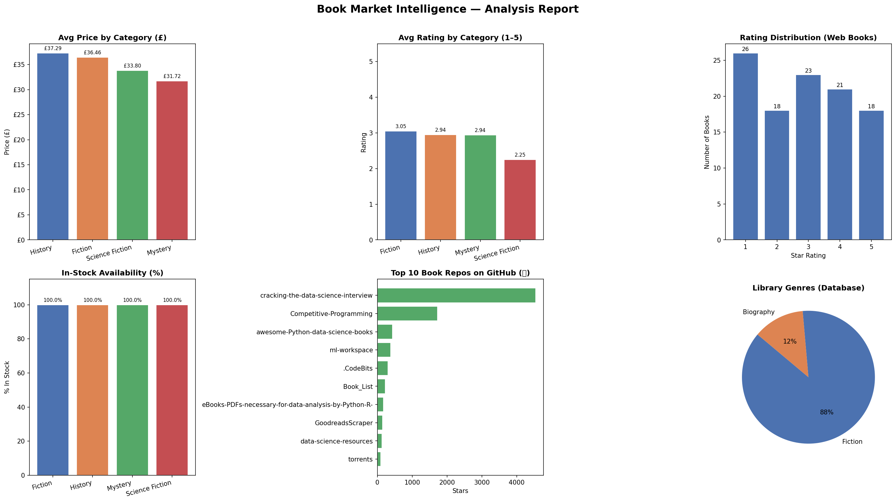

Generated: 2026-03-07 09:56
| Metric | Finding |
|---|---|
| Most expensive category (avg) | History |
| Cheapest category (avg) | Mystery |
| Highest rated category | Fiction |
| Overall average price | £34.77 |
| Overall average rating | 2.88 / 5 |
| In-stock percentage | 100.0% |

| Source | Records Collected |
|---|---|
| Web Scraping (books.toscrape.com) | 106 |
| GitHub API | 20 |
| Library Database (library.db) | 8 |